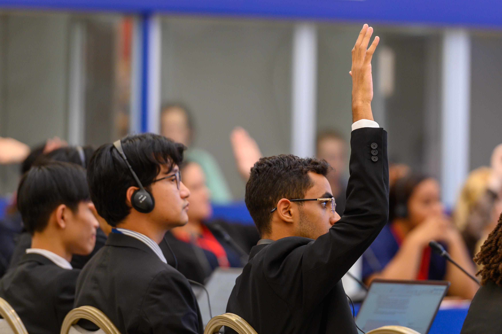

From Youth Recommendations to Policy Dialogue
Samarkand, Uzbekistan • 27 to 28 October 2025 • Featuring Mohamed Naguib, Founder & Chairperson
Youth Leaders Worldwide
Member States & Associate Members
Steering Committee Seat Held by Egypt
Selected Youth-Led Projects
Balanced Egypt’s Founder and Chairperson, Mohamed Naguib, represented the organization at the 14th UNESCO Youth Forum, held in Samarkand, Uzbekistan, on 27–28 October 2025. Bringing together 145 youth leaders from 135 Member States and Associate Members, the Forum examined the relationship between climate action and its social consequences, creating an international platform for young people to develop recommendations on some of the most pressing challenges facing their communities.
Naguib’s role extended beyond participation. As one of six members of the Forum’s Steering Committee, he contributed to the preparation of the programme and the development of global and regional youth recommendations. He was also selected to deliver the Forum’s official closing address on behalf of its participants, addressing senior UNESCO leadership, ministers and international officials. His participation followed a nomination through Egypt’s UNESCO structures.

From Collective Recommendations to Institutional Dialogue
The Forum’s participants adopted the Conclusions of the Youth Forum (43 C/INF.13), comprising a Call to Action, global and regional recommendations, and five selected youth-led projects. The recommendations called for stronger youth participation in climate governance, expanded access to climate education and training, greater support for youth-led innovation, and stronger connections between scientific research, local knowledge and sustainable livelihoods.
The conclusions were subsequently presented during UNESCO’s General Conference, where Member States discussed the Forum’s work and emphasized the importance of inclusive youth participation in the Organization’s programmes and governance mechanisms. This created a substantive avenue for youth perspectives to enter institutional discussions about UNESCO’s priorities.
Yet the distinction between being heard and shaping implementation remains important. The General Conference considered the Forum’s conclusions for information, without requiring a decision on that agenda item. The process therefore should not be mistaken for formal intergovernmental adoption of every recommendation. Its significance lies in establishing a collective youth agenda and bringing those perspectives into the institutions where programme priorities are considered.
The Closing Address
Delivered on behalf of all 145 delegates, the official closing address captured the spirit of collaboration and responsibility forged throughout the Samarkand dialogues:
"Excellencies, distinguished guests, dear friends,
My name is Mohamed Naguib, and I had the honour of serving as the Delegate of Egypt and a Steering Committee Member, speaking today on behalf of the 14th UNESCO Youth Forum.
We extend our heartfelt gratitude to the Government and people of Uzbekistan for their generous hospitality, and to the President of the 42nd session of the General Conference and the Assistant Director General of UNESCO for their inspiring leadership and commitment to youth participation.
I would also like to express my deepest appreciation to my Steering Committee colleagues. Over the past few months, our committee has been working closely with the Secretariats to shape the forum and finalize the agenda. We've also been in constant contact with the delegates to hear their perspectives and make sure their concerns and ideas are reflected in the process.
My own journey to this forum started through Balanced Egypt, a youth led initiative that raises awareness about food waste and its social and environmental impact. That led my National Commission for UNESCO to nominate me to represent my country.
Arriving here, I found myself among inspiring young leaders from every corner of the world. What struck me most was how our differences in background and culture did not separate us, they united us. They gave depth to our dialogue, strength to our recommendations, and meaning to our shared mission.
Throughout the forum journey, we have shown that collaboration is more than discussion, it is a shared responsibility. Together, we turned ideas into collective purpose and proved that hope is most powerful when it becomes action.
As we close this chapter, I speak on behalf of all delegates when I say: this is not the end, but the beginning. The friendships we built, the visions we shared, and the commitments we made here will continue beyond this room, in our communities, our nations, and our futures.
Because the true legacy of the 14th UNESCO Youth Forum is not written in reports, but in the change we create together.
Rahmat, Shoukran, and Thank you."
What This Engagement Means for Balanced Egypt
Balanced Egypt works to advance a more balanced approach to sustainable development through youth engagement, awareness and related initiatives. Its work includes raising awareness of food waste and its social and environmental consequences, connecting environmental responsibility with the broader realities of communities and sustainable development.
The Forum’s cross-sector perspective is particularly relevant to this mission. Environmental challenges rarely exist in isolation. Their consequences intersect with social conditions, public awareness, access to knowledge and the capacity of individuals and communities to respond. A balanced approach to development must therefore consider these relationships rather than treating environmental progress as a separate objective.
For Balanced Egypt, engagement in this international dialogue provides an opportunity to examine how youth-led perspectives can contribute to wider conversations on sustainability and institutional priorities. It also reinforces an important distinction: representation creates opportunities for participation, while meaningful influence depends on the quality of contributions, the responsiveness of institutions, and the work that follows.
Rethinking Climate Action Through a Social Lens
Held under the theme “Climate Action and Social Impacts, Particularly for Young People,” the Forum approached climate change as more than an environmental challenge. Its consequences extend into education, health, livelihoods, cultural heritage, technological access and the resilience of communities facing environmental pressures.
Discussions and recommendations addressed six interconnected areas: youth engagement in climate governance; greening education; youth innovation for sustainable transition; digital transformation and ethical technology; health, resilience and community well-being; and the role of cultural and natural heritage and knowledge in climate action.
Together, these priorities reflected a wider development question: how can climate responses account for the social conditions that determine whether communities can adapt, participate and thrive? Addressing environmental challenges requires more than setting ambitious objectives; it also requires accessible knowledge, inclusive institutions, support for local innovation and opportunities for young people to contribute meaningfully to the decisions affecting their lives.